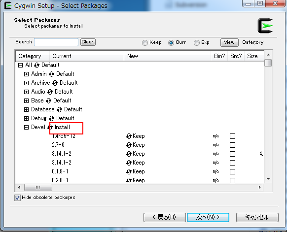
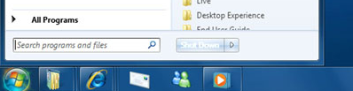
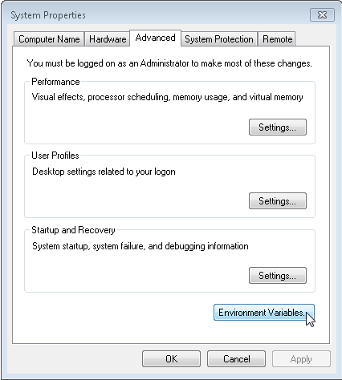
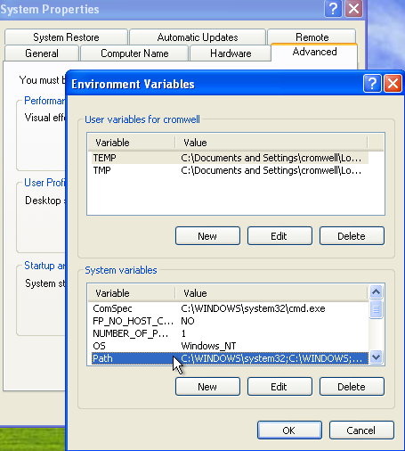
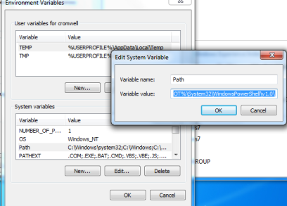

環境構築方法¶
MS-Windows環境:cygwinインストール¶
本ウィンドウシステムでは、スクリプトをコンパイルしてウィンドウデータとします。 スクリプトをコンパイルするときに、プリプロセッサとしてgccを使用しています。
MS-Windows環境では、以下の手順でcygwinをインストールしてください。
cygwinをダウンロード¶
次のアドレスから setup-x86.exe 若しくは setup-x86_64.exe をダウンロードしてください。
Devel パッケージを選択しインストール¶
Select Packagesの項目で図のように、Develを Default → Install に変更してください。

インストール¶
後は指定通りインストールしてください。
パスを通す¶
インストールしたフォルダを基準に、binのパスを環境変数のシステムパスに追加してください。
デフォルトでは、下記のフォルダになっています。
C:\cygwin\bin (64bit版なら、c:\cygwin64\bin)
注釈
この環境変数は、cygwinの環境変数ではなく、Windowsのシステム環境変数です。
詳しい手順は次の通りです。
スタートメニューを押してください。
「プログラムとファイルの検索」に、sysdm.cplを入力し、「システムプロパティ」を開いてください。
詳細設定パネルを選択し、「環境変数」ボタンをクリックしてください。
次に、システム環境変数のリストから、スクロールダウンしてPathという値を探してください。見つけたらPathという値をクリックし選択後、もう一度クリックすると次のようなエディットボタンが開きます。
ウィンドウが開いたら、現在の値がハイライトされているはずです。現在の値を消したり、変更しないように気を付けてください。あなたの設定を破壊してしまいます。
恐らくデフォルトの設定では以下のような値が設定されているかと思われます。
%SystemRoot%\system32;%SystemRoot%;%SystemRoot%\System32\Wbem
セミコロンで値が区切られているので、デフォルトでは三つの要素から構成されています。
%SystemRoot%\system32
%SystemRoot%
%SystemRoot%\System32\Wbem
あなたが ”;c:\cygwin\bin” を最後に追加したいなら、次のようになります。しかしこれはあくまでも例であって、あなたの環境に合わせて従来の設定を変えずに最後に追加するようにしてください。
%SystemRoot%\system32;%SystemRoot%;%SystemRoot%\System32\Wbem;c:\cygwin\bin
OSX環境:Xcodeのコマンドラインツールをインストール¶
ターミナル上でgccが見つからないときは、各自Xcodeからコマンドラインツールをインストールしてください。
多言語対応を行うための準備¶
Python 2.7 インストール¶
多言語対応のための文字リソースを作るときに、MS-Excelを使います。 MS-Excelから、データコンバートするためのツールは、Pythonで記述されています。
最初に Python2.7 をインストールしてください。
openpyxlライブラリのインストール (A Python library to read/write Excel 2010 xlsx/xlsm files)¶
Excelファイルを読み込むためのライブラリは、 openpyxl を使用しています。 各自インストールしてください。 コマンドラインから次ようにしてインストールしてください。
pip install openpyxl